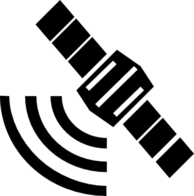
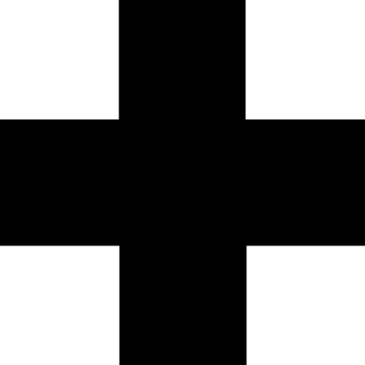

|  | NAVEGACION DAMB GPS |
Eth sistèma de guida per GPS ei ua ajuda tara navegacion. En condicions optimes, mos pòt condusir pes itineraris damb fòrça precision. Totun i a fòrça factors (com ara eth relèu deth terren, obstacles o bromes que distorsionen era senhau deth satellit, o era sensibilitat deth nòste pròpi dispositiu) que pòden afectar ara precision. Per açò ei important balhar tanben atencion as indicacions escrites enes punts de rota e sajar d'avalorar en tot moment era nòsta posicion a compdar dera interpretacion dera mapa, coma manères de confirmar eth posicionament GPS. Era aplicacion mos mòstre era nòsta posicion entorada per un cercle blu que represente era precision dera localizacion, que pòt èster variabla. Cau tier en compde qu'era nosta posicion reau pòt èster en quaussevolh punt laguens d'aguest cercle.
Cau auer activada en vòste dispositiu era opcion de localizacion per GPS.
Eth consum de bateria peth sistèma GPS ei naut, cau portar era bateria cargada ath 100% quan comencem er itinerari. Entà estauviar ath maxim era bateria ei recomanable de portar eth dispositiu en mòde de demora pendent er litinerari, enquia que s'entene era senhau acustica e era vibracion d'avís en arribar a bèth punt d'interès.
Tanben ei recomanable d'auer-lo en mòde “avion” en zònes sense cobertura entà evitar era despena de cercar senhau sense exit
|  |
SEGURETAT |
Enes itineraris a pè, especiaument aqueri en zòna de nauta montanha:
En cas d'accident, cau seguir eth protocòl PAS - Protegir, Avisar, Socórrer
RESPÈCTE PETH MIEI |
Erosion e compactacion deth terren en caushigar-lo - Evitem caminar per dehòra des sendèrs mercadi e préner drecères. Enes passi estrets e arribents, coma norma de cortesia, qui baishe cedís eth pas ath que puge.
Molestar ara fauna, en especiau as espècies protegides, autant as individus coma ath sòn abitat - Evitem cridar e hèr massa tapatge. Susvelhem qu'eth nòste can non acace ne ataque era fauna sauvatja. Respectem es sòns abitats: per exemple, non botgem ròques o troncs que les poguen servir de refugi, non lancem pèires enes rius e estanhs, ne metegam obstacles ara corrent d'aigua enes rius. Rebrembatz qu'eth banh e es espòrts aquatics non son permetudi enes estanhs.
Recolleccion d'espècies botaniques, plan especiaument es protegides - Evitem arrincar flors e plantes. Respectem es regulacions ena recuelhuda d'espècies comestibles, coma misharnons e d'auti. Non recollectem fruts damb metòdes agressius entàs plantes.
Generacion de residus - Non deishem cap tipe de lordèra en miei, tanpòc es que pòden servir d'aliment entara fauna sauvatja: non formen part dera sua dièta naturau e les hèn a cambiar es sòns abits d'alimentacion e de comportament.
Huecs forestaus - S'auem d'alugar huec, ac haram sonque enes lòcs exprèssament condicionats, e susvelhem-lo. Non lancem puntes de cigarretes, ne alugades ne amortades.